Japan / Ibaraki / Ibarakimachi
Ibarakimachi, Ibaraki: things to do, food and stays
Ibarakimachi · Ibaraki
Ibarakimachi
Highlighted on the Ibaraki map.

Stay
古民家の宿 庄や山口

Ko Minka No Yado Sho Ya Yamaguchi
Inn in Tsunei, Ibarakimachi with a renovated traditional house.
Dining
森のそば屋 清エ門

Mori Nosoba Ya Kiyoshi E Mon
CHINESE DINING 瑞
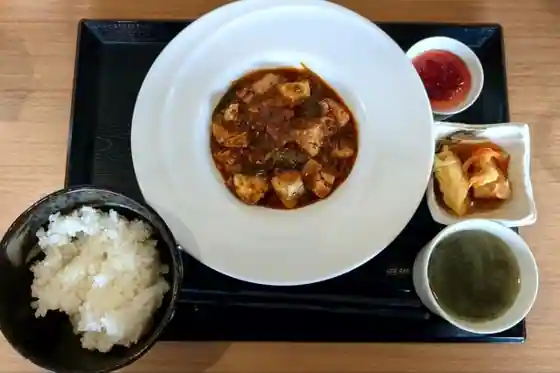
CHINESE DINING Zui
匠庵
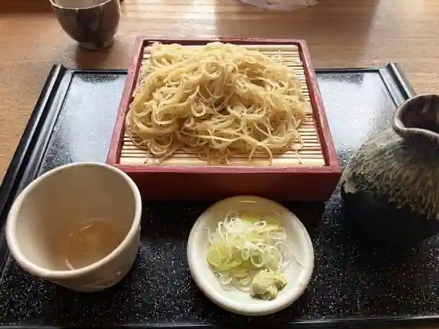
Takumi Iori
うなぎや
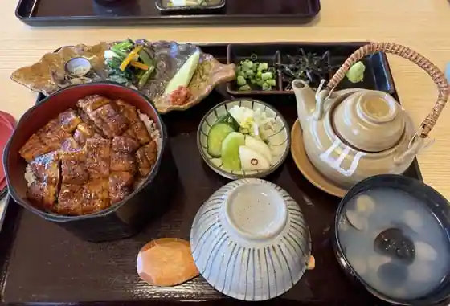
Unagiya
御食事処 魚ふみ
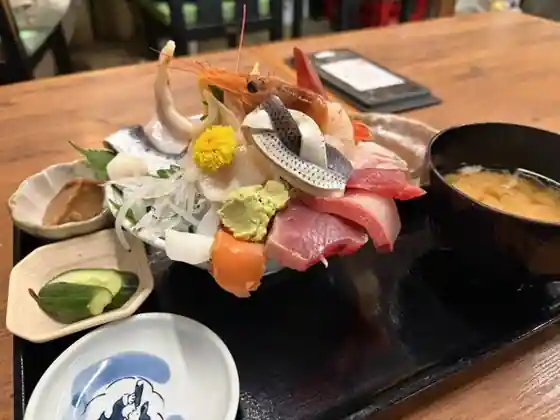
Mike Koto Tokoro Sakana Fumi
実り家
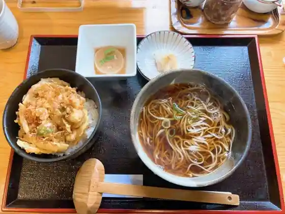
Minori Ie
大黒家
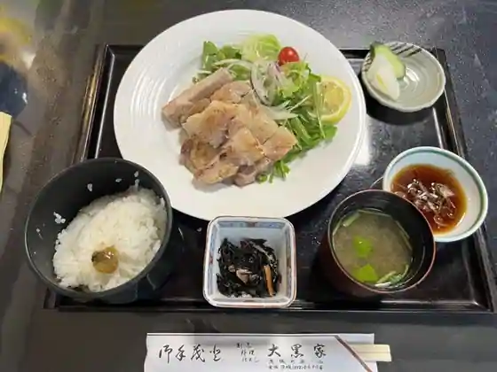
Daikoku Ie
うおふね
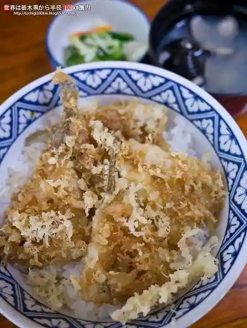
Uofune
情熱キッチン
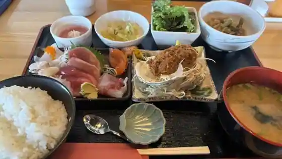
Jonetsu Kitchen
森のベーカリー&カフェ
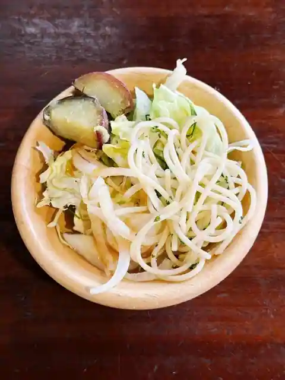
Mori No Bakery & Cafe
めし処まんてん 石崎店
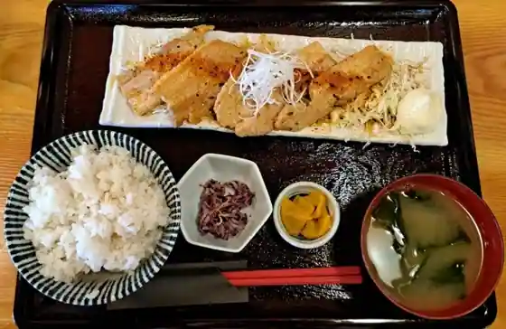
Meshi Tokoro Manten Ishizaki
ハシモト食堂
Hashimoto Shokudo
ルアンタイ
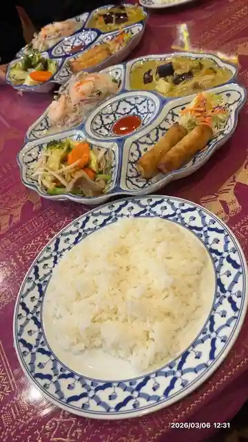
Ruantai
ごはんの店 泰朋 長岡店
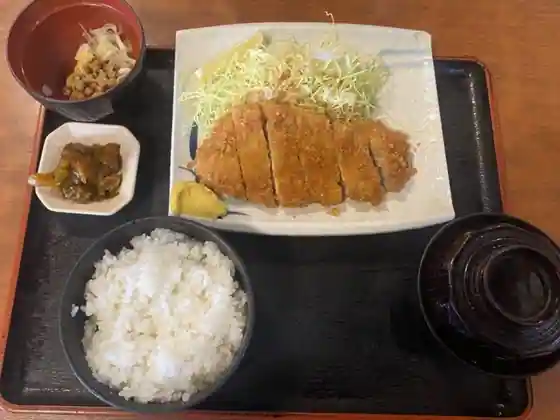
Gohanno Yasutomo Nagaoka
松の庵
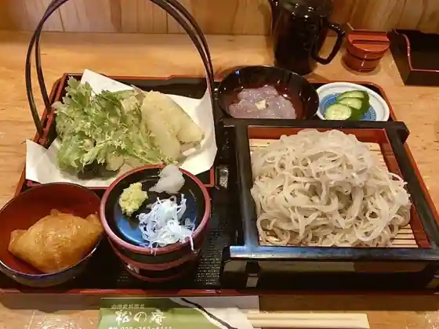
Matsu No Iori
ピッツァ アシーメ
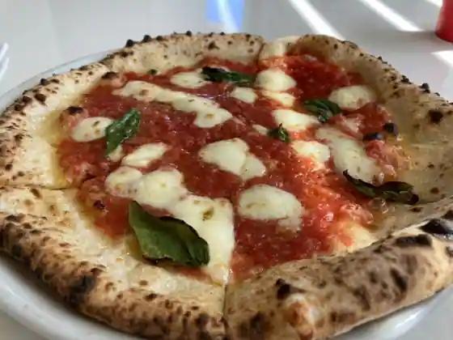
Pittsua Ashime
オールドオーチャードゴルフクラブ レストラン
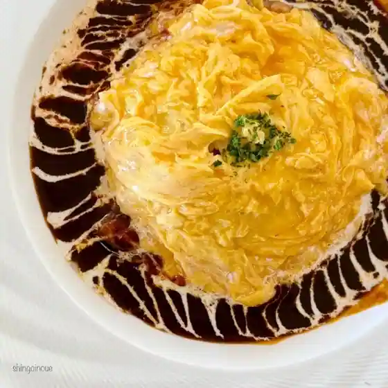
Orudoochadogorufukurabu Restaurant
フレンチ松庵
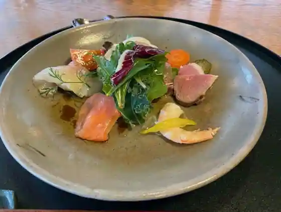
Furenchi Shoan
パティスリーブローニュ
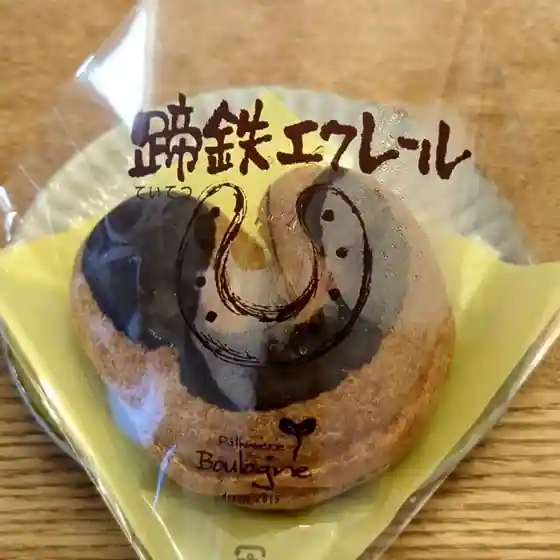
Pateisuriburonyu
柴龍
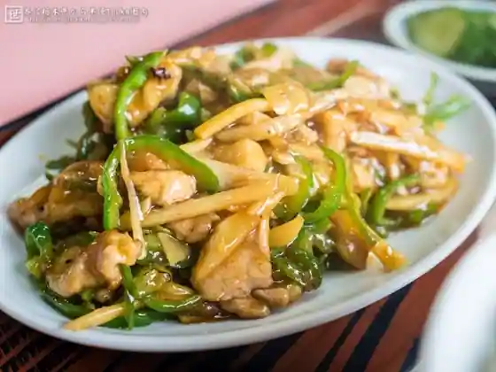
Shiba Ryu
キッチン ヤン
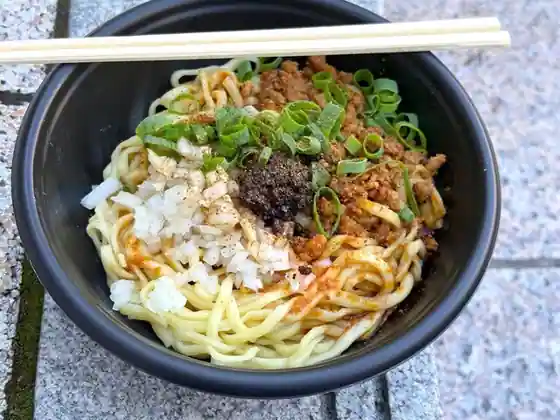
Kitchen Yan
たくみ家 水戸南店
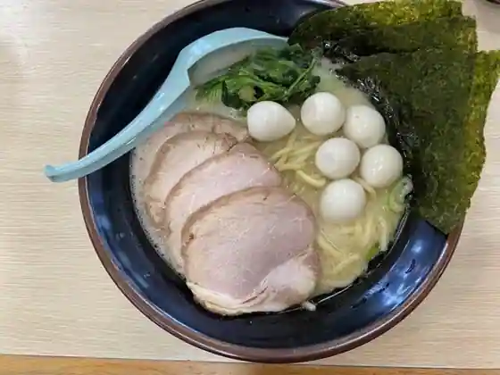
Takumi Ie Mito Minami
麺工房 夢想庵
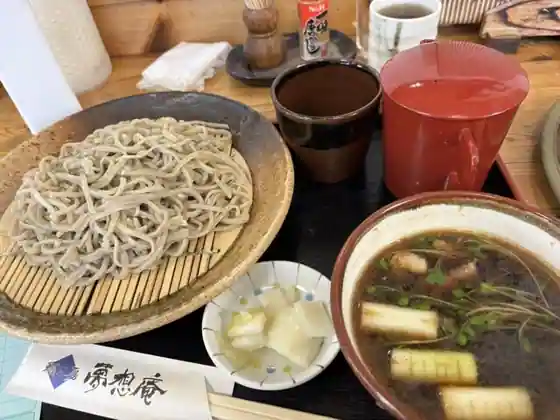
Men Kobo Muso Iori
おばた
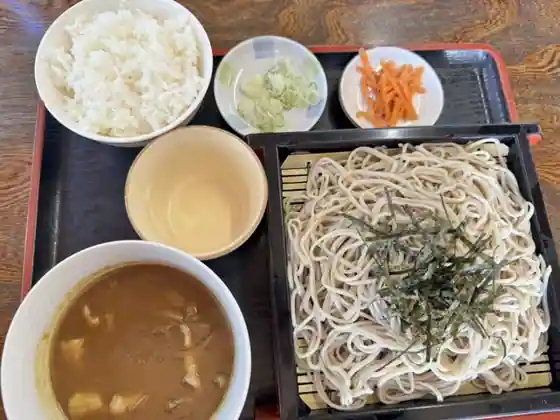
Obata
Sights
Hinuma Nature Park

Hinuma Nature Park Campground

Pogatto Farm Dokidoki Ibarakimachi Mise
Oya Sawa Park
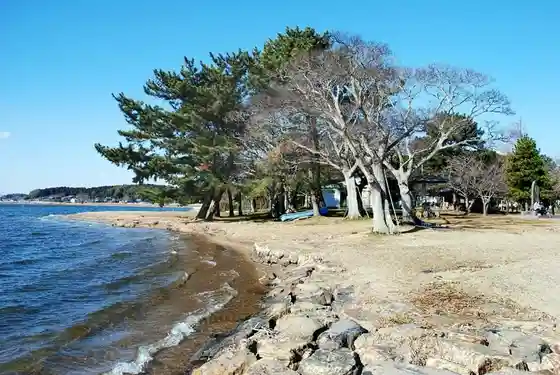
Ko Ura Park
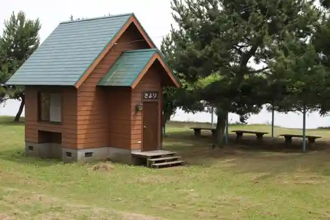
Obata Kitayama Haniwa Seisaku Iseki (Kuni Shitei Historic Site)
Oto no Sakura
Mito Hakkei (Ko Ura Akizuki)
Fowado Marinsupotsu
JA Mito Guriinhausu Hinuma
JA Mito Ibarakimachi Chiku Nosambutsu Chokubai Tokoro (Sakura)
Shina no
Soba Kichi Mokubu Mise
Shokuji Kan Hachiman Taro
Hinuma Mizutori Shitchi Center (Tenji Shisetsu)